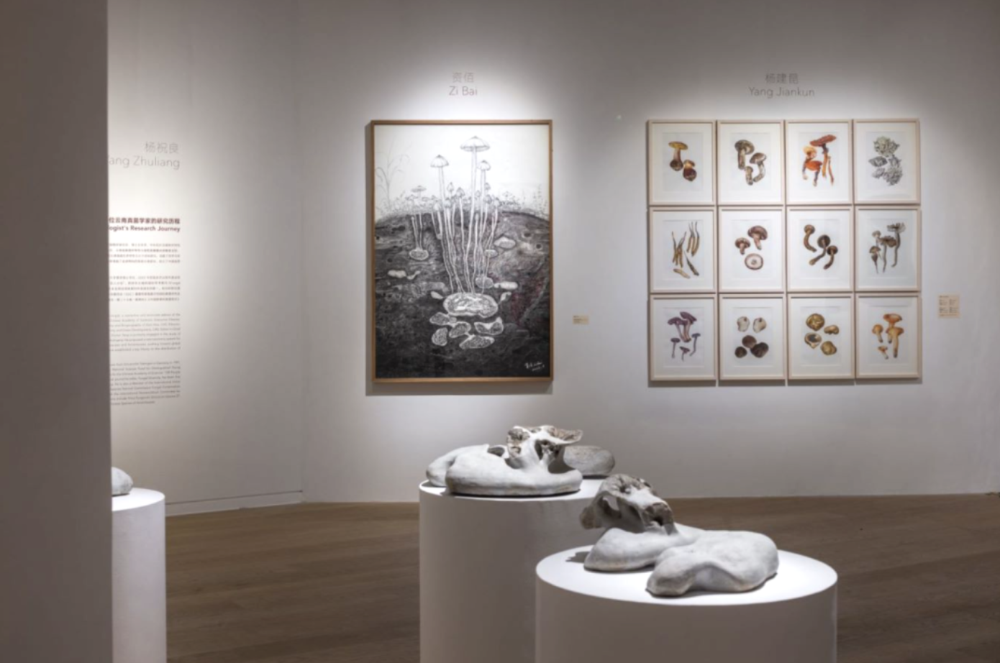

A reported feature on how a mushroom-themed exhibition in Yunnan uses fungi as a lens to connect ecology, environmental urgency, and art–science collaboration — from spores and mycelium networks to field research.

A mushroom exhibition in Yunnan is never only about food. As the title suggests, fungi become a model of “interconnection”: an underground network that links science, ecology, and environmental anxieties into a single curatorial proposition.
This piece follows the exhibition “Mushroom Speak: A Network of Interconnection” at Kunming Contemporary Art Museum, tracing how artists translate spores, mycelium, and field research into forms — and how contemporary art increasingly builds its ecological imagination through dialogue with scientific institutions.
Excerpt 1: Spores, mycelium — and a sculpture “grown” rather than made
In Yan Xiaojing’s Lingzhi Girl, young female busts are covered with sprouting lingzhi. The work begins with a simple biological fact: when fungi reproduce, they release spores into the air; once spores land in a suitable environment, they develop into white, cylindrical hyphae, and eventually form an expanding mycelium network. What we see above ground is only a small part of the organism.
Instead of associating mushrooms only with decay, the artist focuses on their participation in life cycles. She fills custom molds with a mixture that contains lingzhi spores, carefully cultivates it, and lets the fungus “create” the sculpture — leaving behind an unpredictable layer of brown spore dust on the surface.
Excerpt 2: John Cage and the mushroom — a method of “chance”
John Cage may be one of the earliest modern artists to be captivated by mushrooms. He collected fungi, helped revive the New York Mycological Society in the 1960s, and treated mushroom-hunting as a way to understand how chance works in art-making.
For Cage, walking into the woods was not a retreat from the world, but a disciplined attention to what cannot be fully controlled: what appears, what fails to appear, and what emerges only when the conditions are right.
Excerpt 3: Matsutake spores — what the market interrupts
Artist Long Pan turns the camera toward a part of matsutake rarely told: spores — difficult to capture, yet essential for reproduction. Because unopened matsutake sell for more, this reproductive journey is often interrupted early.
After searching for three days and two nights in the mountains near Shangri-La, she finally recorded the moment of spore release — and asks how economic behavior might be balanced with ecological protection.